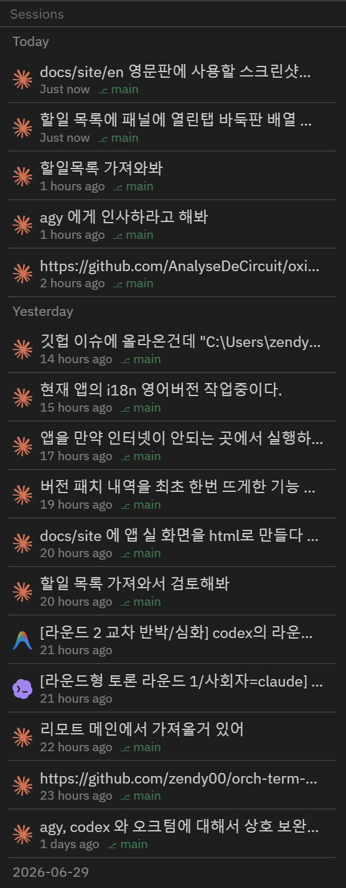

Core features · Session list
Session list (resume)
The 5th sidebar mode, "Sessions", gathers the AI CLI agent (claude · codex · agy · grok · opencode · hermes) conversations you ran in the active project in one place and resumes them with a single click. orchterm doesn't record them separately — it reads the conversation records each CLI leaves on disk directly (parse-don't-ask). Conversations come back automatically after an app restart, and the name you give a tab becomes the conversation's name.
Opening the session panel
Open it with the Sessions icon in the sidebar mode bar or Ctrl+Shift+S (the command palette's "Sessions" also works). The list is specific to the active project (current folder), so switching projects shows that project's sessions.
List — date groups · agent icons · meta
Sessions are sorted newest first and bucketed into date groups (Today / Yesterday / YYYY-MM-DD). Each row shows a brand icon that tells you which CLI it is, plus the title (first user message), a relative time, and (if any) the git branch. CLIs without a brand icon yet (grok · opencode · hermes) show their name as text.

Rename — give a session your own title
List titles come from the first user message in each CLI's transcript, so they are often long or look alike. Right-click a row and pick Rename to edit the title in place — Enter saves, Esc cancels.
- The original title stays — a renamed row shows the original title in grey on a second line, so you never lose track of what the conversation was.
- Undo — pick Reset to original title from the same menu, or save an empty name, to go back.
- Tabs follow — resuming a renamed session labels the new terminal tab with that name too (unnamed sessions keep the agent's name as before). If the conversation is already running in an open tab, that tab's name changes right away.
- Stored locally — names live in orchterm's own settings; the CLI transcript files are never modified.
Tab name = conversation name
It works the other way too. Rename a terminal tab and the AI conversation running in it appears under that same name in the session list. Double-click the tab title, or right-click the tab and pick Rename.
- Order doesn't matter — name the tab first and start
codexlater; the name attaches the moment the conversation appears. - It follows you across conversations — switch to a different conversation inside one tab (claude's
/resume, say) and the new one picks up the tab's name too. Think of the tab name as that tab's identity. - Default labels don't count — automatic labels like
bashorWindows PowerShellare never saved. Only a name you set yourself becomes a conversation name. - Undo — picking Reset to original title in the session list also returns the tab running it to the original title.
Resume — pick up in the original folder
Click a row to resume the conversation in a new terminal tab in that session's original working folder (cwd). It runs the right command per CLI automatically.
| Agent | Resume command |
|---|---|
| claude | claude --resume <id> |
| codex | codex resume <id> |
| agy | agy --conversation <id> |
| grok | grok --resume <id> |
| opencode | opencode --session <id> |
| hermes | hermes --resume <id> |
⚠️ Resume works only if that CLI (claude · codex · agy · grok · opencode · hermes) is on the system PATH.
Bypass permissions — resume without approvals
Turn on the Bypass permissions switch in the session panel header and resuming will automatically add each CLI's bypass-permissions flag, so the session picks up immediately without folder-trust or tool-approval prompts. The switch state is saved and persists across app restarts (off by default).
| Agent | Resume command (bypass on) |
|---|---|
| claude | claude --dangerously-skip-permissions --resume <id> |
| codex | codex --dangerously-bypass-approvals-and-sandbox resume <id> |
| agy | agy --dangerously-skip-permissions --conversation <id> |
| grok · opencode · hermes | No flag is added — only CLIs with a verified bypass flag get one (guessing a flag would make the CLI fail to start) |
⚠️ Bypass permissions is a risky, not-recommended option for unattended runs — when on, the agent writes files and runs commands without asking. It is off by default (safe mode), so enable it only in projects you trust. Unchecking it restores the usual one-time folder-trust approval.
Conversations survive a restart
Quit and reopen the app and the AI conversation that was running in each terminal tab comes back on its own. orchterm remembers which conversation was running in which tab and brings the same one back to the same place — for all six CLIs.
- However you started it — not just tabs resumed from the session list, but ones you typed into a shell yourself, ones behind an alias (say
clforclaude), and ones launched through a wrapper script. It looks at the process actually running in that tab rather than at the text of the command you typed. - After a force-quit or a crash — not only a clean exit; killing the app from Task Manager or a crash restores just the same.
- The conversation you switched to — if you moved to a different conversation inside the CLI (
/resumeand friends), you come back to the last one you were in. - Conversations you ended stay ended — if you exited the agent in a tab, that tab opens as a plain shell. The same conversation is never opened in two tabs at once.
- Without a conversation id it falls back to "continue the last one" (
claude --continue·codex resume --last·hermes --continue). agy has no such option, so it is restored only when the id is known. - Turning it off — Settings → Terminal → Agent session restore. With it off the tabs still come back; only the conversations aren't resumed.
Duplicated tabs and tabs torn out into their own window do not resume the conversation — that would attach two processes to one conversation. SSH terminals are out of scope too (a remote conversation can't be picked up locally).
Incremental display · loading bar
- Incremental display (pagination) — draw only 20 at a time, then "More (N left)" at the bottom for +20. The query runs once (up to 500 per project), and More just draws more of the already-fetched list, so it responds instantly (no re-query).
- Loading bar — when a query starts, the list is cleared and a progress bar ("Loading sessions…") shows inside the panel until the results arrive and replace it.
- Active-project scope — the list is based on one active project. Adding, switching, or removing a project reloads it immediately.
Cross-platform · how it finds them
It reads each CLI's conversation store where it already lives. It picks only sessions run in the same folder as the active project, normalizing path comparison per OS convention (lowercasing on Windows only). The backend is a read-only scanner, independent of orchterm's own DB — it never writes to another tool's files.
| Agent | Conversation store |
|---|---|
| claude | ~/.claude/projects |
| codex | ~/.codex/sessions |
| agy | ~/.gemini/antigravity-cli/ (history.jsonl + conversations/*.db) |
| grok | ~/.grok/sessions/…/summary.json ($GROK_HOME wins) |
| opencode | ~/.local/share/opencode/opencode.db ($XDG_DATA_HOME wins) |
| hermes | Windows %LOCALAPPDATA%\hermes\state.db · elsewhere ~/.hermes/state.db ($HERMES_HOME wins) |
Keyboard shortcuts
| Key | Action |
|---|---|
| Ctrl+Shift+S | Open sessions mode (mac Cmd+Shift+S) |
| Ctrl+Shift+P | Command palette → "Sessions" |